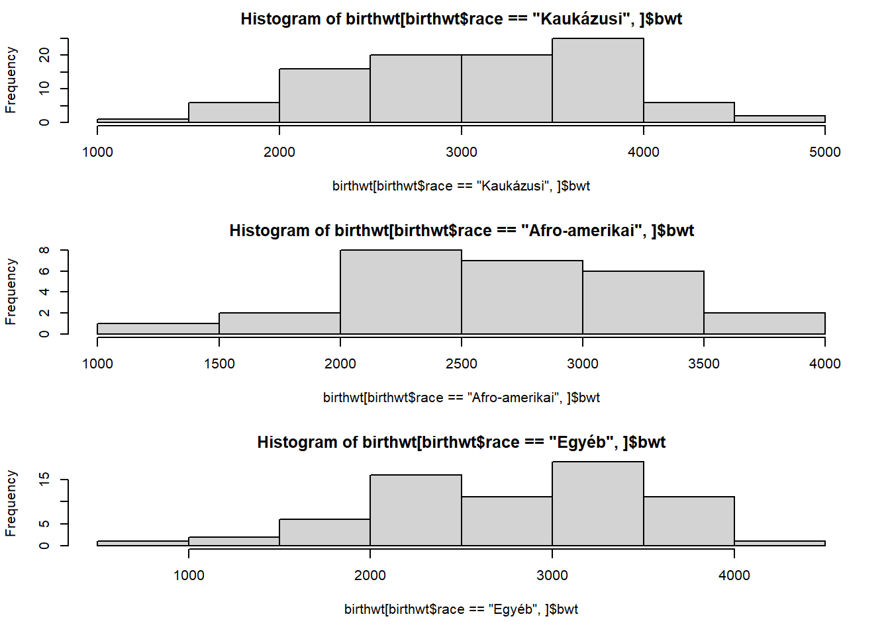
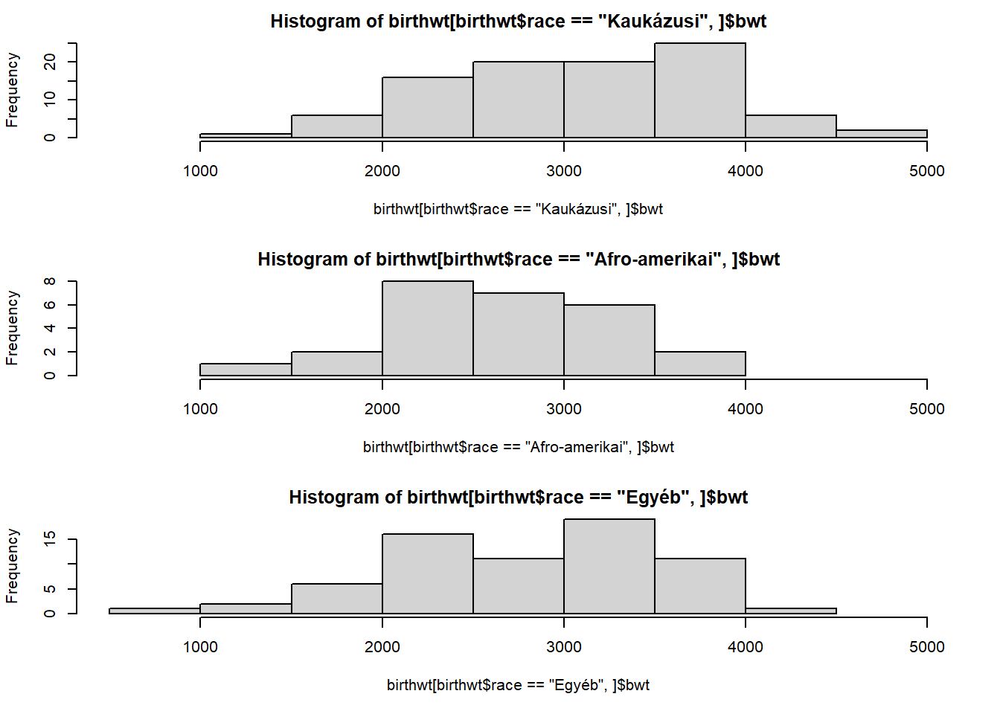
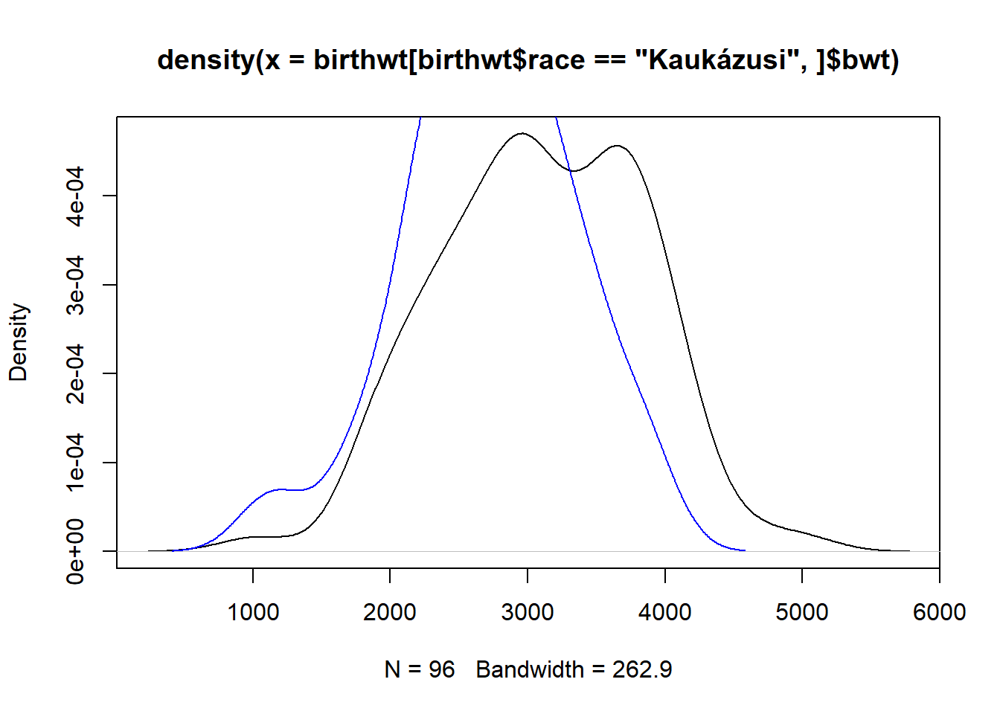
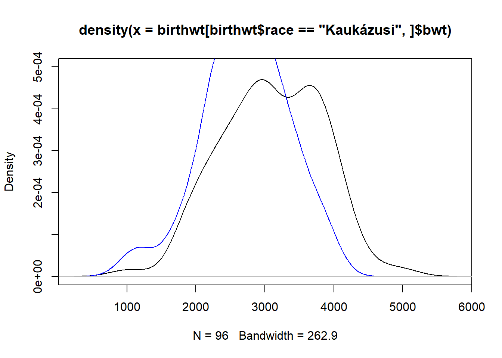
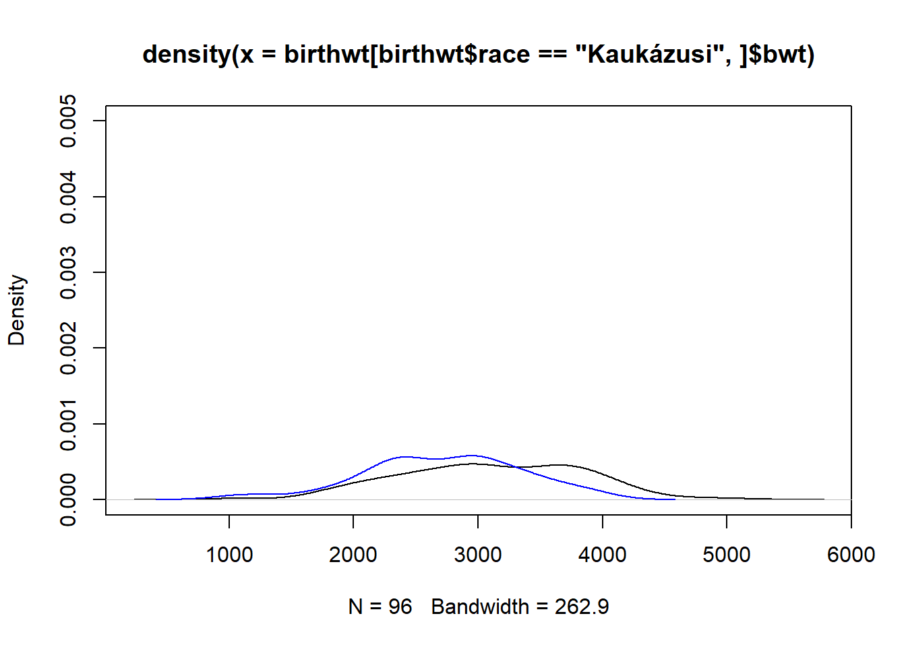
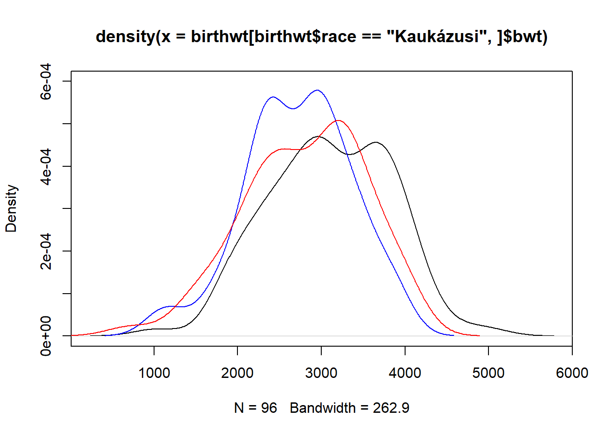
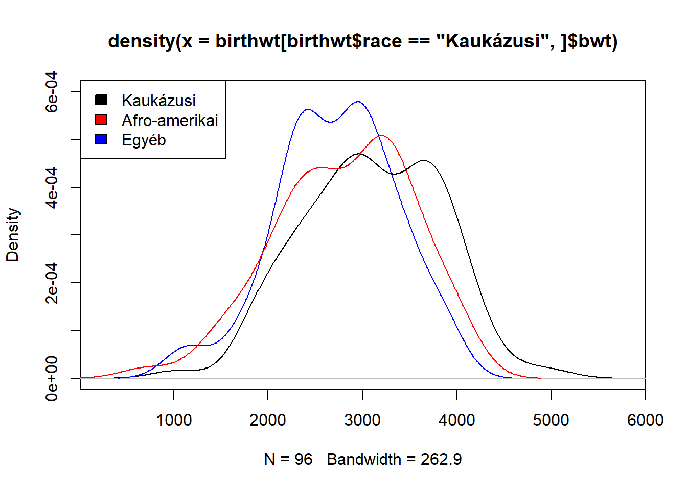

data(birthwt, package = "MASS")
birthwt$race <- factor(birthwt$race, levels = 1:3,
labels = c("Kaukázusi", "Afro-amerikai", "Egyéb"))4 Haladó adatvizualizáció
A deskriptív statisztika kapcsán (2. fejezet) lépten-nyomon láttunk adatvizualizációkat. Még csoportosítási szempont is volt, úgy hívtam ott az ilyeneket, hogy a deskriptív statisztika grafikus eszközei. Annyiban azonban korlátozott volt az adatvizualizáció ottani tárgyalása, hogy kizárólag az R beépített1 lehetőségeit használtuk; ezt úgy is szokták hívni, hogy base R grafika.
Ebben a fejezetben elsőként (4.1. alfejezet) jobban kontextusba helyezzük a base R grafikát: mi az egyáltalán, milyen előnyei és milyen korlátai vannak? Erre már csak azért is szükség van, mert korábban, a deskriptív statisztikáról szóló fejezetben ezeket az eszközöket magától értetődőnek vettem, anélkül, hogy jobban vizsgáltuk volna az előnyeit és hátrányait. A korlátok miatt több, tudományos adatvizulizációra kifejezetten alkalmas haladó adatvizualizációs csomag is kialakult az évtizedek alatt – mi is megismerkedünk ezt követően az egyik ilyen csomaggal, a ggplot2-vel (4.2. alfejezet). Elsőként megismerjük az általános működését, majd megnézzük a korábban már látott, base R grafikás – elemi – vizualizációk ggplot2 alatti megvalósítását. Ha ez megvan, akkor továbbléphetünk a fejezet fő céljára: meg fogunk ismerkedni a többváltozós vizualizációkkal, különösen hangsúllyal kitérve a vizualizáció stratégiai kérdéseire, tehát immár elszakadva a technikai megvalósítástól, arra fogunk fókuszálni, hogy adott tudományos kérdéshez mi lesz a legcélszerűbb ábra, hogyan tudjuk megtervezni úgy a vizualizációt, hogy legjobban segítse a kérdés megválaszolását.
4.1 A base R grafika és korlátai
A deskriptív statisztikánál (2. fejezet) mindenhol base R grafikát használtam az adatvizualizációk elkészítésére, így az ottani kódok és ábrák áttekintése már jó képet ad e vizualizációs rendszer főbb jellemzőiről. A base R grafikában minden ábratípushoz egy saját függvény tartozik, és az ábra testreszabását a függvény argumentumainak beállításával tudjuk végezni. (Az argumentumok meglehetősen konzisztensek base R grafikán belül, tehát ha valahol megtanultuk, hogy a main argumentummal lehet címet adni az ábrának, akkor jó eséllyel számíthatunk arra, hogy ez minden base R grafikás ábránál így lesz.) Base R grafikával jellemzően elemi ábrákat lehet legyártani, azaz olyanokat, amik egyszerűbb esetekre önmagukban is megoldást jelentenek, a bonyolultabbakat pedig nagyon gyakran ezekből, mint építőkövekből kell összerakni (vagy több kombinálásával, vagy egynek valamilyen variálásával). Mindazonáltal ehhez az építkezéshez az base R grafika már jellemzően kevés segítséget ad.
A base R grafika megtanulása, korlátaival együtt is, hasznos. Egyrészt, mert egyszerű, és abban a fejezetben a hangsúly sokszor az elméleti kérdéseken volt, így jól jött, hogy az R-es kivitelezés nem vonta el a figyelmet, gyorsan, könnyen megírható, magától értetődő kódokat lehetett használni. Ez nem csak didaktikai kérdés: a valós napi gyakorlatban is sokszor előfordul, hogy valami egyszerű ábrára kell villámgyorsan rápillantani, amit csak „belső használatra” gyártana le az ember; ilyenkor sokszor az egyébként haladó grafikát használók is inkább csak gyorsan a base R grafikához nyúlnak. Úgyhogy hasznos, ha az ember ezt is ismeri (túl azon, hogy az alapokat „illendő” ismerni). Mindemellett, a base R grafikának előnyei is vannak, például jól támogatja azt, ha egy meglevő ábrára akarunk rárajzolni valamit.
Ezzel együtt is, a base R grafikának komoly limitáció vannak. Az egyik az esztétika: sokan azt mondják, hogy a base R grafikás ábrák nem néznek ki túl jól. Ez persze elég szubjektív (mi az, hogy „jól néz ki” egy ábra?), de ami objektív, hogy base R grafikában az elemi ábrák ugyan könnyen megvannak, de ha komplexebb ábrákat akarunk összerakni, akkor nagyon hamar jönnek a gondok. Egy ponton túl ezeket egész egyszerűen nem is lehet megvalósítani base R grafikában, de ha meg is lehet, az is sokszor macerás, időigényes, sok kódolást igényel. De, ami sokkal fontosabb, hogy ez nem csak idő és energia kérdése: a még nagyobb baj, hogy a sok macera mind-mind hibalehetőség. Nézzünk is meg pár példát erre!
Alanyunk a megszokott adatbázis lesz:
A feladat pedig legyen a következő: vizualizáljuk a születési tömegek eloszlását rassz szerint! Azt is mondhattam volna: vizualizáljuk a születési tömegek és a rassz kapcsolatát; de az előbbi megfogalmazás már a megoldást is sugallja: kell egy eszköz mennyiségi változó vizualizálására (amit használnánk ha csak simán a születési tömegek eloszlását akarnánk ábrázolni, mondjuk egy hisztogram vagy magfüggvényes becslő), majd ezt kell alkalmazni, csak most nem egyszer, hanem többször – minden rasszra külön-külön. Ezeket az ábrákat utána persze megfelelően ki is kell rajzolni. (Ha valaki szeretné a dolgot a deskriptív statisztikáról szóló fejezet tipológiájába beilleszteni: ez lényegében egy kétváltozós kapcsolat vizualizálása volt, ahol az egyik változó minőségi, a másik mennyiségi!)
Válasszuk mondjuk először eszközként a hisztogramot! Ekkor tehát több hisztogramot kell legyártanunk, majd valahogy ábrázolnunk. Az utóbbi kapcsán belefutunk a hisztogramok egyik problémájába: nem lehet őket egymásra plottolni, például különböző színekkel megkülönböztetve (pedig az lenne az ideális – erről később még sok szó lesz), ezért csak egymás mellé lehet őket plottolni. Ami nem annyira jó, illetve azt a kérdést is felveti, hogy egymás alá vagy egymás mellé plottoljuk? Erről később még fogunk beszélni, most maradjunk abban, hogy egymás alá plottolunk. Base R grafikában ezt a feladat csak úgy tudjuk megoldani, hogy a plottolási felületet kézzel szétosztjuk több, kisebb részfelületre – erre szolgál az mfrow nevű opció. Ha ezt beállítjuk, akkor az első kiplottolt ábra a bal felső kis részfelületre kerül, és minden további ábra, ha kiadunk valamilyen plottolási utasítást, a következőre (ha elérünk az utolsóig, akkor kezdődik a dolog elölről a bal felső résznél, felülírva az ábrákat).
Nekünk tehát most három sorra (és egy oszlopra, hiszen oszlopokat nem akarunk) kell osztanunk a felületet. Illetve bocsánat, általában véve nem tudhatjuk, hogy mennyire lesz szükségünk, úgyhogy először ezt ki kell derítenünk:
length(unique(birthwt$race))[1] 3Ha ez megvan, akkor a par(mfrow = c(3, 1)) paranccsal végrehathatjuk a szétosztást (a par parancs szolgál a grafikus paraméterek beállítására). Ezt követően kirajzolhatjuk2 a hisztogramokat:
par(mfrow = c(3, 1))
par(mar = c(5.1, 4.1, 2.1, 2.1))
hist(birthwt[birthwt$race == "Kaukázusi",]$bwt)
hist(birthwt[birthwt$race == "Afro-amerikai",]$bwt)
hist(birthwt[birthwt$race == "Egyéb",]$bwt)
Figyeljük meg, hogy a dolog két szempontból is macerás: egyrészt nekünk, kézzel kell megoldani az adatbázis rászűrését a megfelelő rasszra, ráadásul még azt is nyomon kell követnünk3, hogy milyen rasszok vannak!
Egy apró technikai megjegyzés: ha már nincs szükségünk a felület szétosztására, akkor adjuk ki a dev.off() parancsot. Ez ugyanis nem csak törli a plottolási felületet, de egyúttal reset-eli a grafikus paramétereket, így az mfrow-t is.
A lényeg mindenesetre, hogy az ábra elkészült, és tudjuk használni!
…vagy mégsem? Túl azon, hogy nagyon rossz a helykihasználás a feleslegesen sok felirat miatt, még egy, elég nagy probléma van: nem ugyanaz a vízszintes tengelyek skálázása! Ami teljesen érthető is: az egyes hist hívások a többitől teljesen függetlenül futnak, így mindegyik a saját (egy rasszra leszűrt) adatbázisára fogja beállítani a vízszintes tengely határait! Ami igencsak nagy baj, hiszen mi az egész ábrát arra akarjuk használni, hogy a balra-jobbra eltolódásokat keressük, ehhez képest itt lehetetlen hogy legyen ilyen: még ha valamelyik rassz 1000 grammal nagyobb vagy kisebb is átlagosan, a fenti ábrán akkor is mindenki szép középen lesz… hiszen az hist így állítja be. És erre nem válasz az, hogy de ott van a vízszintes tengely beosztása, és azon ez látszik – az egész adatvizualizáció lényege, hogy segítsük az olvasót, az a lényeg, hogy minél egyértelműbben, minél automatikusabban, a legkevesebb „kognitív munkával” látszódjon az eredmény az ábrán. Ha számokat kell kiolvasni, több tengelyről, összehasonlítani, majd ez alapján elképzelni, hogy mi hol van, az már régen rossz. (Ezt az „elképzelést” kell nekünk, egy jó ábrával megvalósítani, az olvasó helyett, levéve róla ezt a terhet! Ekkor lesz az ábra igazán jó!)
Mi a megoldás? Természetesen az, hogy minden hisztogramot ugyanazzal a vízszintes tengelybeosztással kell kiplottolni. Igen ám, csakhogy ezt mi sem tudhatjuk, hogy mi! Azt kell megnézni, hogy mi a bwt teljes terjedelme, hogy mindegyik ábrán kiférjenek az adatok, és erre kell állítani az összes hisztogramot. De ezt mi sem tudhatjuk, hogy mennyi, ezért először kérdezzük le kézzel:
range(birthwt$bwt)[1] 709 4990Ezt némileg kerekítve most már elkészíthetjük a jó ábrát, természetesen minden egyes hisztogramnál kézzel beállítva ezeket a határokat:
par(mfrow = c(3, 1))
par(mar = c(5.1, 4.1, 2.1, 2.1))
hist(birthwt[birthwt$race == "Kaukázusi",]$bwt, xlim = c(500, 5000))
hist(birthwt[birthwt$race == "Afro-amerikai",]$bwt, xlim = c(500, 5000))
hist(birthwt[birthwt$race == "Egyéb",]$bwt, xlim = c(500, 5000))
Sikerült létrehozni az ábrát? Igen. Egyszerű volt a dolog? Nem. Meg tudtuk oldani, de oda kellett figyelni, rengeteg dolgot kézzel kellett állítani, mindegyik ilyen kivétel nélkül hibalehetőség, a maceráról nem beszélve. És még így is egy olyan ábra jött létre ami… khm, komoly vizuális kihívásokkal terhelt.
Talán ennél is nagyobb problémákra mutat rá a következő példa. A feladat legyen ugyanez, annyi módosítással, hogy most nem hisztogramot, hanem magfüggvényes sűrűségbecslőt akarunk alkalmazni az egyes eloszlások vizualizálására.
A magfüggvényes sűrűségbecslő előnye, hogy ilyenből több is ráplottolható ugyanarra az ábrára (nyilván valamilyen módon, például színnel megkülönböztetve ezeket), ami azért előnyös, mert jobban összehasonlíthatóak azok a dolgok, amik ugyanazon az ábrán vannak.
Álljunk neki a feladatnak! Az egyetlen dolog, amire figyelni kell, hogy az első KDE-t ábrázolhatjuk plot-tal, de a másodikat már nem, mert a plot mindig elsőként letörli a plottolási felületet. De semmi gond nincs: a density objektumot átadhatjuk egy lines-nak is, ami pont ezt a problémát oldja meg, mert ugyanazt csinálja mint a plot, de nem üríti a felületet, hanem a meglevőre ráplottol – pont amire szükségünk van! Nézzük is; természetesen a színt nekünk kell, kézzel beállítanunk:
plot(density(birthwt[birthwt$race == "Kaukázusi",]$bwt))
lines(density(birthwt[birthwt$race == "Afro-amerikai",]$bwt), col = "blue")
Baj van: a második görbe kifut az ábra tetején. De ha végiggondoljuk, hogy mi történt, akkor nagyon hamar rájövünk, hogy mi a probléma forrása: az ábra koordinátatengelyeit az első hívás állította be – természetesen az ott használt, kaukázusira leszűrt adatbázis alapján! A lines ráplottol, vagyis természetesen nem tudja, visszamenőleg, megváltoztatni a függőleges tengely határait…!
Próbáljunk a dolgon javítani. A megoldás nem bonyolult: egyszerűen meg kell növelni a függőleges tengely tartományát. (Természetesen kézzel beállítva!) Itt azonban van egy plusz-probléma: nem nyilvánvaló, hogy mire kell állítanunk. Az előző példánál is volt hasonló probléma, csak ott legalább ez a gond nem volt, mert a range használatával egyszerűen lekértük, hogy mik a határok. De a függőleges tengelyre, tehát, hogy a sűrűség meddig fut fel, nincsen range, ezt nem tudjuk sehogy lekérdezni, vagy megtudni…! Mondhatnánk, hogy akkor először plottoljuk a második rasszt (hiszen az úgy beállított tengelyekre az első már biztosan ráfér), de ez sem oldja meg a problémát, mert mi van, ha a harmadik még nagyobb? Voltaképp arról van szó, hogy a kísérletezést sehogy nem tudjuk megspórolni, akkor kísérletezzünk (próbálgatásos alapon – hiszen jobb eszközünk nincs!) inkább a függőleges tengely skálázásával:
plot(density(birthwt[birthwt$race == "Kaukázusi",]$bwt), ylim = c(0, 5e-04))
lines(density(birthwt[birthwt$race == "Afro-amerikai",]$bwt), col = "blue")
Sajnos nem jó a dolog, ez a felső határ nem elég. Próbáljuk újra:
plot(density(birthwt[birthwt$race == "Kaukázusi",]$bwt), ylim = c(0, 5e-03))
lines(density(birthwt[birthwt$race == "Afro-amerikai",]$bwt), col = "blue")
Na, ezzel meg túllőttünk a célon – belefér minden ugyan, de nagyon kicsire vannak összenyomva, nem használjuk ki a területet, ami szintén nem jó. Próbáljuk még egyszer:
plot(density(birthwt[birthwt$race == "Kaukázusi",]$bwt), ylim = c(0, 6e-04))
lines(density(birthwt[birthwt$race == "Afro-amerikai",]$bwt), col = "blue")
lines(density(birthwt[birthwt$race == "Egyéb",]$bwt), col = "red")
Most már stimmel!
Illetve… egy apró, de azért meglehetősen kézenfekvő probléma még mindig van: melyik szín mit jelent?? Na igen, ugyanis nincsen jelmagyarázat, e nélkül nem sokra megyünk az ábrával… Szerencsére a base R grafikának van jelmagyarázatot készítő függvénye, az a neve, hogy legend, át kell neki adni a jelmagyarázat pozícióját, valamint a feltüntett szövegeket és színeket:
plot(density(birthwt[birthwt$race == "Kaukázusi",]$bwt), ylim = c(0, 6e-04))
lines(density(birthwt[birthwt$race == "Afro-amerikai",]$bwt), col = "blue")
lines(density(birthwt[birthwt$race == "Egyéb",]$bwt), col = "red")
legend("topleft", c("Kaukázusi", "Afro-amerikai", "Egyéb"),
fill = c("black", "red", "blue"))
Most már minden tökéletes! Ugye?
…vagy mégsem?
Aki szerint minden tökéletes, nézze meg még egyszer, jobban a színeket…
A harci helyzet ugyanis az, hogy elrontottam a jelmagyarázatot. Igen, elrontottam, ugyanis semmi nem kapcsolja össze, hogy a jelmagyarázatban mi jelenik meg, és hogy az ábrán mi van…! Következésképp simán meg lehet tenni, hogy a jelmagyarázatban mást tüntetünk fel, mint ahogy az ábra készült! E felett semmiféle kontroll, ellenőrzés, figyelmeztetés nincs; egyetlen pillatnyi figyelmetlenség a mi részünkről, és teljesen rossz ábra készül! (Ha ráadásul az R kódot nem adjuk meg, csak az ábrát, ez soha ki sem derül…!)
Remélem ez a példa végképp demonstrálta, hogy az ilyen ábrák összerakása base R grafikával, még ha lehetséges is, nagyon macerás, és, ami még nagyobb baj, hatalmas hibalehetőségeket rejt magában. Szoktam mondani, hogy ha egy ábrára legend kell vagy több részábrából áll, az jó jel arra nézve, hogy elgondolkozzunk, hogy inkább ne base R grafikában valósítsuk meg.
De akkor miben?
4.2 Haladó adatvizualizációs csomagok, a ggplot2
Az elmúlt évtizedek alatt nagyon komoly munka folyt olyan haladó adatvizualizációs csomagok kialakítására, melyek lehetővé teszik a komplex, adott esetben nagyon komplex tudományos adatvizualiciók relatíve egyszerű, hibaálló, jól átlátható kóddal történő elkészítését R alatt. Azért fogalmaztam úgy, hogy „relatíve”, mert az ilyen megoldások a legegyszerűbb feladatokra tipikusan bonyolultabbak, mint a base R grafika – de cserében a bonyolultabbakra jobban működnek, vagy egyáltalán, működnek.
A mai napra két csomag kristályosodott ki, amelyeket a fenti célra széleskörűen használnak.
Beépített, azaz külön csomag betöltése nélkül is elérhető. Valójában ezek a függvények is valamilyen csomagban vannak – jellemzően a
graphics-ban – csak ezek a csomagok automatikusan betöltődnek az R indulásakor.↩︎A
marparaméter beállítására tisztán technikai okokból van szükség. Ez az ábra körüli margók szélességét adja meg base R grafikában; kicsit le kell csökkenteni, hogy kiférjen az oldalon.↩︎Ez utóbbin lehetne segíteni egy
for-ciklussal – itt most joggal használnánkfor-ciklust, ahistegy mellékhatásos függvény – ami ezt a problémát megoldaná, de behozná afor-ciklust, mint plusz programozási eszközt; úgyhogy most maradtam az egyszerű, kézi megvalósításnál.↩︎